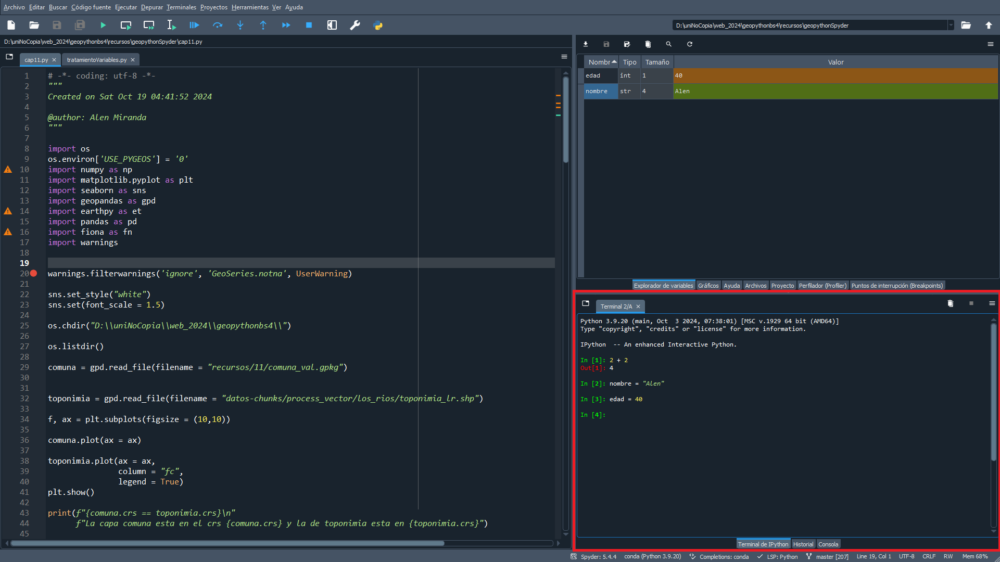
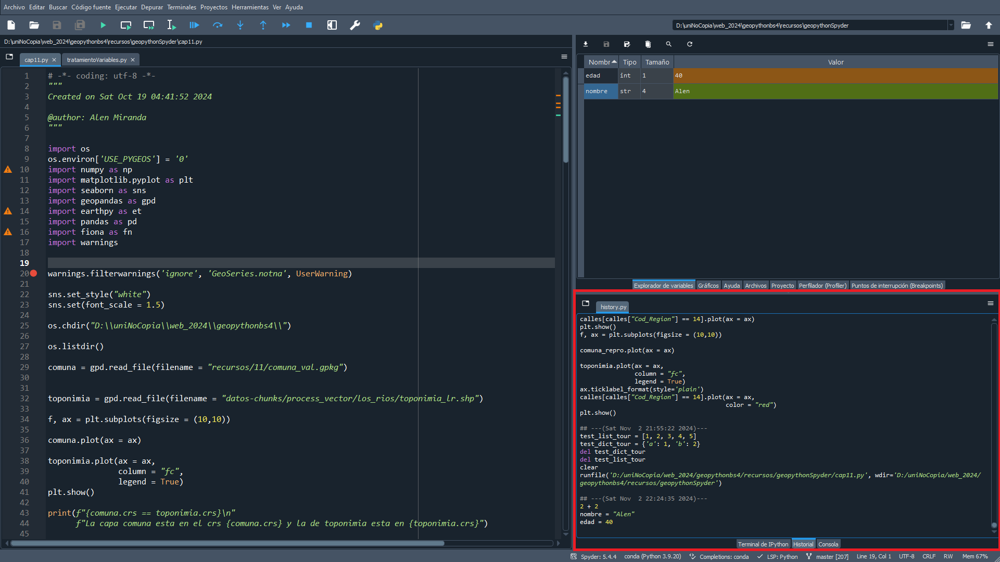
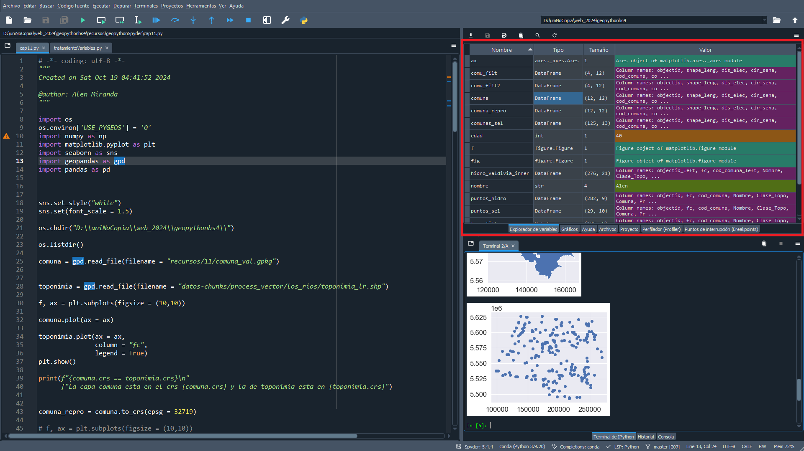
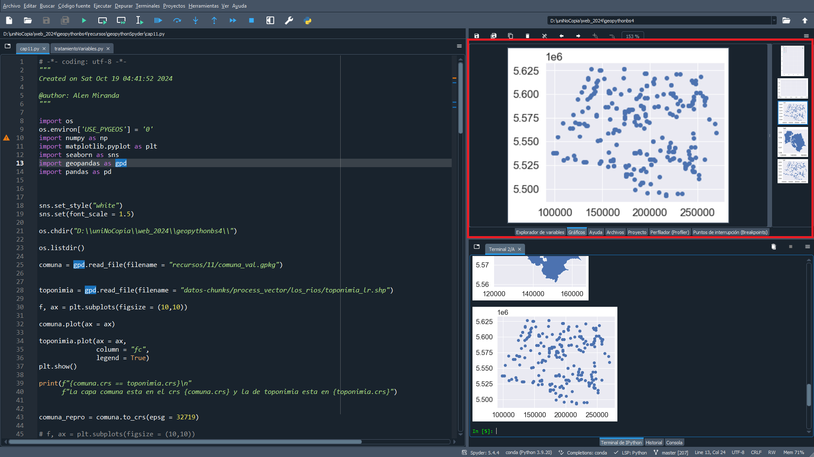
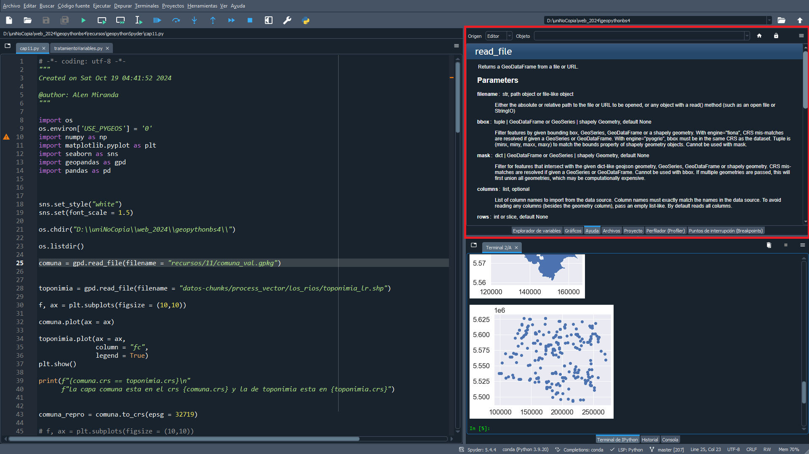

1 Introducción a Python y Librerías esenciales
La ciencia reproducible es cuando cualquiera puede entender y replicar los pasos de un análisis, aplicarlos a los mismos o nuevos datos. La ciencia abierta es también soportada por la colaboración. Los resultados reproducibles que se originan en flujos de trabajos reproducibles permiten que el trabajo se comparta y se pueda colaborar con otros, así como abiertamente publicar tus datos y flujos de trabajo para contribuir al conocimiento.

Dentro de esta, la programación, en un contexto de academia científica, permite la automatización de tareas, lo cual facilita que los flujos de trabajo puedan ejecutarse fácilmente y ser replicados. La programación científica usando lenguajes de libre acceso como R, Python o Julia, es una forma efectiva y eficiente para comenzar a construir flujos de trabajos que pueden ser reproducibles y, además fácilmente compartidos.
Python es un lenguaje de programación libre, abierto y gratuito, que puede ser descargado por cualquiera para ser usado. Este se ha convertido en uno de los lenguajes más populares y demandados en el mercado del trabajo (i.e. PyQGIS para desarrollar plugins y herramientas dentro del entorno de QGIS).
Según Stack Overflow (uno de los foros de programadores más grande de internet) Python es el tercer lenguaje más popular.
Existen distintas formas de ocupar Python (tales como, su misma terminal, IPython, Jupyter), sin embargo, para mejorar la interactibilidad de este lenguaje ocuparemos Spyder un IDE diseñado específicamente para Python.
Sin embargo, para el análisis de datos, el uso exclusivo de Python puede quedar corto. Para poder realizar distintas acciones dentro de esto (tales como crear clickers, analizar datos, visualizar datos multimedia) podemos ocupar librerías. Estos son módulos o paquetes específicos que expanden la funcionalidad de Python, facilitando el manejo de datos, la visualización y otras tareas complejas.
1.1 Programas necesarios
Para poder organizar nuestro entorno de trabajo, deberemos descargar algunos programas que ayudarán a generar ambientes de trabajo reproducibles y aislados entre sí.
Git Bash
Bash es un intérprete de línea de comandos y un lenguaje de scripting muy popular en sistemas operativos Unix y basados en Unix, como Linux y macOS. A través de esta se puede controlar el computador digitando los comandos desde el teclado, en lugar de usar los botones y menús como habitualmente se hace con los sistemas operativos más usados.
De forma nativa, este intérprete no se encuentra dentro de Windows, por lo que, para hacer uso de este deberemos descargar Git Bash, el cual integra esta herramiento junto con git, “un sistema de control de versiones distribuido, libre y de código abierto, diseñado para manejar proyectos de cualquier tamaño, desde pequeños hasta muy grandes, con rapidez y eficiencia”.
Si bien, Git no suena tan familiar, su versión online GitHub si. Esta página alberga código y sus versiones en internet y cualquier persona puede ser capaz de ver, replicar y alterar dicho (con los permisos suficientes). Algunas de las empresas que ocupan esto son Google, Microsoft y Netflix.
Para su instalación, nos dirigiremos a la página oficial de Git Bash:
Seleccionamos el sistema operativo y versión (64-bit y 32-bit) que corresponda al computador. Ejecutamos el lanzador e instalamos, al abrirlo se verá similar a la imagen a continuación, los colores pueden cambiar, ya que ofrece la posibilidad de customizar.
/c/Users/Alene).
Miniconda
Para la creación de entornos de trabajo podemos ocupar Conda, un sistema de gestión de paquetes y entornos de desarrollo, facilitando la instalación y gestión de librerías con sus dependencias, siendo importantes para evitar incompatibilidades entre paquetes. Debido a que Conda resulta tener un gran volumen, ocuparemos Miniconda, la cual es una distribución de Python que posee lo esencial para funcionar. Dentro de este instalaremos los paquetes y librerías que necesitamos para realizar análisis geoespaciales.
El instalador se encuentra disponible en:
Es IMPORTANTE seleccionar el sistema operativo y versión (64-bit y 32-bit) que corresponda al computador y durante la instalación seleccione la primera opción para “Agregar Miniconda3 a mi variable de entorno PATH” seleccionando también en “Registrar Anaconda como Python 3.x predeterminado”.
Aunque el paso de agregar Anaconda al PATH no es recomendado por el sistema, lo haremos igualmente para que sea más fácil usar Conda con Git Bash.
Probando la nueva configuración
Cerramos y abrimos el Bash.
En el Terminal que se levanta digite
bashy presione Enter. Si no se obtiene ningún mensaje, quiere decir que Bash está disponible para ser utilizado.Digite
gity presione Enter. Si aprecia una serie de comandos, Git está disponible para ser utilizado.
bash (sin mensaje) y git (comandos disponibles).
- Digite
conday presiona Enter, si se aprecia una serie de comandos, Conda está disponible para ser empleado.
El ambiente
Dentro Conda instalaremos un ambiente de Python con librerías específicas para el análisis de datos geoespaciales que sido creado exclusivamente para este taller. Puedes descargar el archivo del ambiente haciendo clic aquí.
Todavía hay que ver esto.
Este archivo (de extensión .yml) contiene todos lo paquetes con sus dependencias necesarios para desarrollar las activiades posteriores. Dentro de el se encuentra el nombre del ambiente (en este caso tallerpython), las librerías y los canales por donde se descargaran estas.
Note que aquí estamos creando un ambiente con paquetes previamente definidos. Si desea crear otro ambiente, con otras librerías, puede consultar la guía de conda.
Para instalar este ambiente ejecute desde el Terminal el comando conda env create -f tallerpython.yml.
Tenga en cuenta que el proceso toma tiempo y varía de acuerdo con las capacidades de cada computador.
environment.yml.
Para ver la lista de los entornos de trabajo disponibles, ejecute conda info --envs. En este caso, nos interesa el ambiente tallerpython.
Para activar cualquier entorno de trabajo debe ejecutar conda activate <nombre-entorno>.
En el caso de que Git Bash genere problemas al usar conda activate ejecute conda init bash solo una vez. Posteriormente, reinicie Git Bash para que los cambios surtan efecto. Si el problema persiste, puede intentar revisando el siguiente link.
Para desactivar el entorno de trabajo conda deactivate, como se observa a continuación, pasamos del ambiente base al recién instalado y luego a base nuevamente.
Spyder
Spyder es un entorno de desarrollo integrado (IDE) de código abierto diseñado específicamente para la programación en Python. Combina herramientas avanzadas en un solo lugar, lo que lo hace popular entre investigadores y analistas.
Para descargar el programa, nos deberemos dirigir al siguiente enlace:
Dentro de este, deberemos escoger el sistema operativo del computador.
Aquí explicar lo del kernel, que no me acuerdo.
Partes de Spyder
Spyder cuenta principalmente con 3 paneles, los cuales pueden tener distintas funcionalidades. Entre sus partes principales se encuentran:
- Editor
En este panel se encuentra el script de Python a ejecutar. Dentro de este, se nos mostrará advertencias (warnings) o errores dentro de nuestro código. Por defecto, las líneas se encuentran numeradas. Tambien uno puede agregar pequeñas anotaciones para destacar ciertas líneas de código (pequeños puntos rojos en líneas 25 y 29).
Consola
Aquí es donde se ejecuta el código. Una manera de hacerlo es dentro del Editor y apretando
F5oCtrl + Enter. En el caso de querer ejecutar código en solo una línea o líneas seleccionadas, puede apretarF9. También puede ejecutar código directamente en la consola.Figura 1.9: Consola de Spyder 2.1. Historial
Se muestra el historial del código ejecutado. También aparece código de sesiones anteriores.
Figura 1.10: Historial de Spyder Conjunto de Sub-Paneles
Este panel contiene distintas herramientas que aportarán interactividad al análisis de datos.
3.1. Explorador de variables
Se muestran los objetos creados con la posibilidad de interactuar con estos.
AdvertenciaProfe, Spyder está dando problemas con pandas, no puedo lograr mostrar los dataframes dentro del explorador.
Figura 1.11: Explorador de variables en Spyder 3.2. Gráficos
Muestra todos los gráficos ejecutados en la sesión.
Figura 1.12: Gráficos dentro de Spyder 3.3. Ayuda
A través de
Ctrl + I, Spyder es capaz de mostrar la documentación de la función en la que se está.Figura 1.13: Ayuda dentro de Spyder 3.4. Perfilador
El perfilador determina el tiempo de ejecución y el número de llamadas para cada función y método llamado en un archivo. Esto te permite identificar fácilmente los cuellos de botella en tu código, señala declaraciones exactas más críticas para la optimización y mide la diferencia de rendimiento después de los cambios de seguimiento.
1.2 Ejemplos
¿Vamos a incluir earthpy para descargar variables? o ¿cargaremos datasets a través de github u otra plataforma?